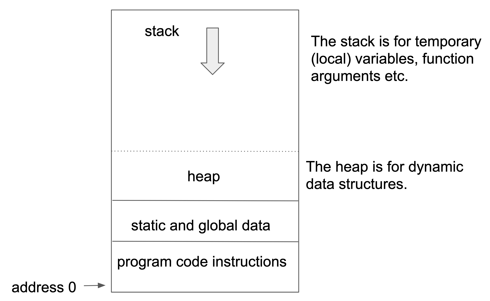
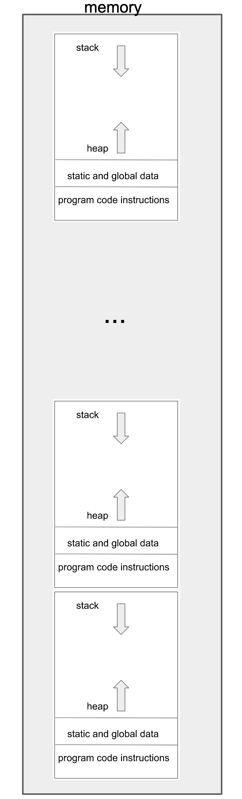
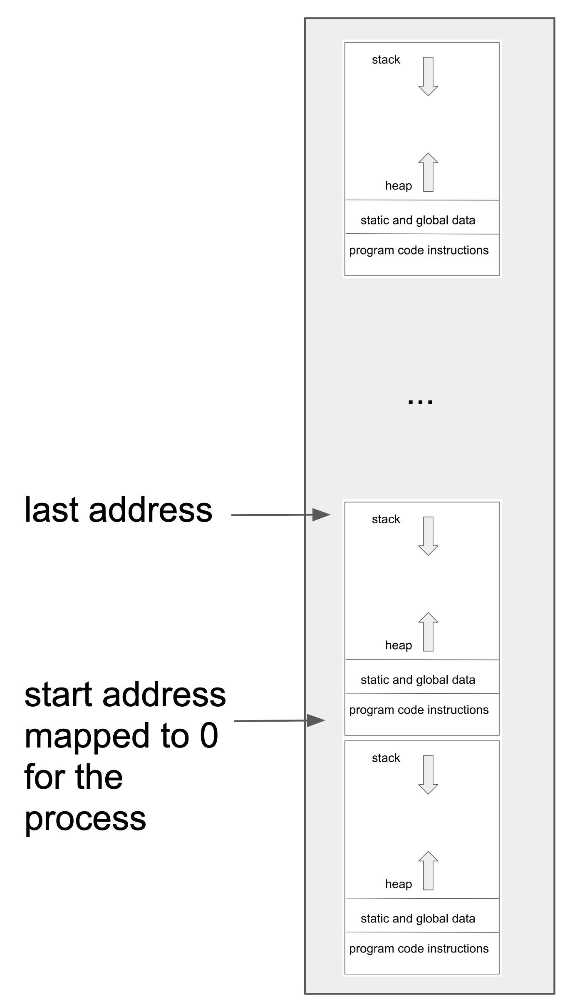
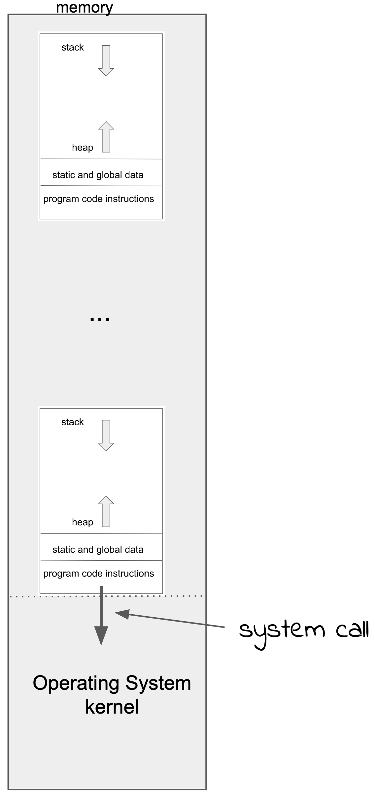

2.2 Programs and Processes¶
So far I’ve discussed how you represent data and instructions in the memory of a computer. Now I’d like to cover programs in more detail.
In a simple computer, programs and data can be placed anywhere in the memory. You might arrange your code into functions and place data areas in between. You might reserve an area of memory for a stack data structure. Any arrangement is possible!
When programmers started using compilers to translate high level programming language into machine code, and when operating systems were developed, the memory layout of a program had to be standardised. In the very early days this often meant the operating system code started at the beginning of memory (location zero) followed by data. Then the program code followed by its data. But now with computers and operating systems capable of handling many programs in memory at once, the layout is slightly more complex.
Unix based systems generally use the following layout for the different parts of a program:
{kind=link}
We’ve already met the stack data structure. In this case it grows from high addresses to low addresses. The static/global data is any data that isn’t stored on the stack or explicitly allocated space in memory by the running program. Think global variables in a programming language.
The “heap” is an area of memory that the program can manage itself at run time. It has to keep track of what parts have been used and may have to re-use memory that has values that are no longer required. This is the so-called “dynamic” memory space. It grows up towards the stack. There is a danger that the stack and the heap might collide but when things are placed on the stack or allocated on the heap a check is carried out. If they are going to conflict, the program has run out of memory and should give an error message.
When programs are stored in the file system (more later) they have a much more compressed form. It is a job of a special program called the “loader” along with the operating system to move the program into memory and setup the stack/heap/global/static/instruction areas.
Programs¶
When you use a desktop computer there is a lot going on behind the scenes. You might have a web browser, music player, word processor, spreadsheet all running at the same time. The screen is covered in icons and windows and you interact though a keyboard and mouse. You might get notifications popping up about a message that has arrived on social media. All of these involve a program running on the computer.
Each of the running programs are laid out in memory in way we described. Code, data, heap, stack etc.
{kind=link}
You may have noticed a problem with this.
Each of those programs assumes it is the only one in the memory and that it starts at address zero. But in fact, each program may be placed in memory nowhere near address zero.
To get around this problem, computers have special “memory mapping” hardware that remaps addresses to be relative to a given address. This can take many forms and started with a very simple scheme but is now extremely complex. Let me start by describing a simple approach.
The remapping hardware keeps two numbers in special registers: start address and length. If my program is loaded into memory at location 1024, the mapping hardware subtracts the start address (1024) from all addresses used by my program and checks the result against the length register. If the result is greater than the length then my program is accessing outside its allotted area and an interrupt will occur. Otherwise the access continues as usual.
When my program stops for some reason, for example it is waiting for input, then another program can be run and so the start address and length are changed to suit the new program before it is (re)started.
{kind=link}
Use of memory mapping hardware also allows the operating system to move programs in memory and restart them with the new memory mapping. The program will not see any difference at the new location.
Managing the memory mapping is a function of the operating system program. The operating system has access to all the memory at the physical (rather the “virtual”) addresses, and so can move programs around and change the mapping.
Since the processes can be stopped and started by the kernel of the operating system, the memory occupied by the process can be saved to mass storage and read back into memory when needed. This is called “swapping” - the process memory is swapped out to mass storage and swapped back in when required.
Virtual Memory¶
The simple memory management system I’ve described above is fine for low end systems but has a few serious problems. The main one is that it is not very efficient in the use of memory. If you have many processes in memory with many “holes” in the address space between them, you may have to do a lot of shuffling to move processes around to make a big enough “hole” to take another process. Also, since the complete process is in memory during execution this may be wasteful. The program might only be using a small part of the heap space, for example, so there is a large chunk of memory unused inside the process. To solve these problems, the idea of “paged” or “virtual” memory management was invented.
In a paged virtual memory system the memory is divided into small (eg 2k or 4k bytes) blocks called pages. A table is maintained in the memory that has an entry for each page showing its actual, physical address and the “virtual” address that it is mapped to.
User vs System mode¶
The operating system program (also known as the kernel) is the only program that has access to the memory mapping hardware. Otherwise, a rogue program could just remap itself and get access to the whole memory!
To restrict access to the kernel, the computer operates in two main modes: “system mode” and “user mode”. On some computers there are many “modes” but I’m going to concentrate on these two.
If the computer is in system mode (sometimes called privileged mode) the running program has access to many extra facilities. As well the memory mapping system it can control the way interrupts work, access I/O devices, use restricted registers etc.
When the computer is first started it is in system mode. This is when the operating system can set things up to run programs. Eventually the system creates a program image somewhere in memory, this could be read from mass storage. It then initialises these special registers, interrupt details, memory mapping etc and finally jumps to the start of the program, switching to user mode at the same time.
Now the program in user mode can only access things inside its allotted memory space. It can only communicate with the outside world by executing a “system call” interrupt, passing some parameter values. In an earlier example of an assembly language program you saw how the program placed some parameters into registers and then invoked the system call interrupt.
The parameters included the code number for the particular system call function required, in this case “write to a file”. The other parameters were a descriptor for the file to be written to (the standard output), the address of the data to be written, and the number of bytes to write.
{kind=link}
Processes¶
A program running in it’s own memory space has a lot of associated data stored in the operating system. For example, every open file has to be recorded in the operating system so the program can refer to it with system calls. Programs have information about who owns them, how long they’ve been running, and many other aspects. When a program has been interrupted, the contents of registers have to be saved, and then restored when the program is restarted.
All of this data, along with the memory of the program, is called a “process”. Given the information about a process we can start it and stop it and manage files on its behalf. Processes are a key part of any system.
In the next chapter we will start describing the Unix/Linux operating system and you will see that it is very easy to find out what processes are in the computer and many details about each process.
[Prev: 2.1 Operating Systems][Next: 3.1 Unix]